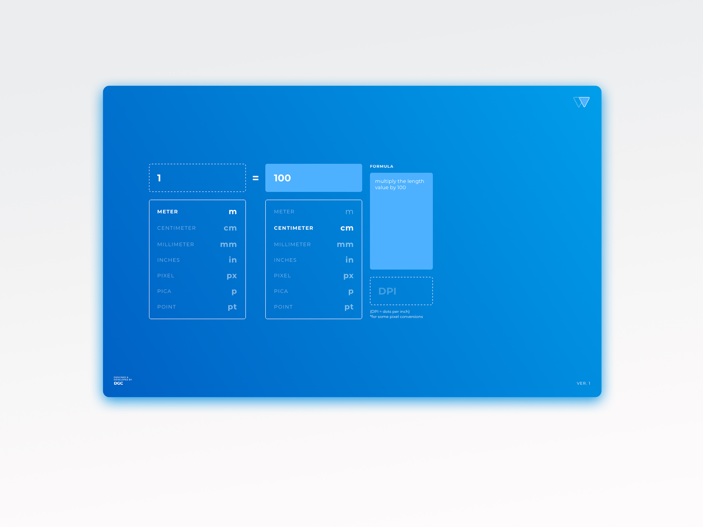
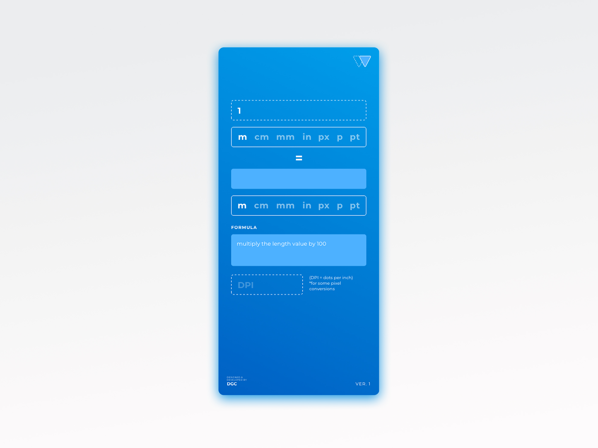

1
/
3
PROJECT
WeConvert
WeConvert is an online unit conversion website for creative professionals.
It's my take on improving one of the most used tools on the internet. Most (if not all) unit conversion websites are either too busy or too confusing because of the unnecessarily distracting content that's placed around parts of the interface that users need and pay attention to. Cause' of this I decided to take matters into my own hands and give back to the design community by improving on something mundane but no doubt useful.